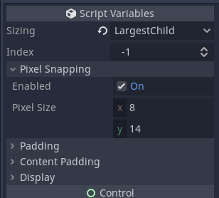

ExportAs CSharp Attribute for Godot
In Godot, it is possible to export properties in sub-sections like so:

To do this, a property must be exported named something like "pixel_snapping/enabled". This can be done by returning a list of dictionaries from an overloaded _GetPropertyList() function.
If you overload _GetPropertyList(), you also have to overload _Get(...) and _Set(...), which quickly becomes a lot of boilerplate to manage just for sub-sections.
To make this process more simple, I wrote a simple CSharp Attribute. It can be used like so:
[ExportAs("pixel_snapping/enabled", Variant.Type.Bool)]
public bool SnapEnabled {
get => _snapEnabled;
set {
_snapEnabled = value;
_updatePadding(); QueueSort();
}
}
private bool _snapEnabled = true;
This attribute can then be automatically scanned and handled in the _GetPropertyList(), _Get(...), and _Set(...) functions with the following calls:
// NOTE: you will want to wrap code in a try-catch right now.
// [Tool] mode will crash on exceptions otherwise.
public override Godot.Collections.Array _GetPropertyList() {
try {
return new Godot.Collections.Array( this.GetPropertyListFromAttributes() );
} catch ( Exception e ) {
System.Console.WriteLine( $"[{nameof(MyClass)}] _GetPropertyList Exception: {e}\n{e.StackTrace}" );
throw;
}
}
public override bool _Set(string propertyStr, object value) {
try {
return this.TryToSetPropertyWithAttribute( propertyStr, value );
} catch ( Exception e ) {
Console.WriteLine( $"[{nameof(MyClass)}] _Set Exception: {e}\n{e.StackTrace}" );
return false;
}
}
public override object? _Get(string propertyStr) {
try {
return this.TryToGetPropertyWithAttribute( propertyStr );
} catch ( Exception e ) {
Console.WriteLine( $"[{nameof(MyClass)}] _Get Exception: {e}\n{e.StackTrace}" );
return null;
}
}
To use this Attribute, simply add this Gist class to your project:
ExportAsAttribute.cs
Hope it helps!